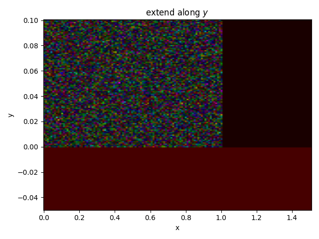

Note
Click here to download the full example code
Extend¶
Demonstrate how to extend past the limits of the data.

- 
from pylab import *
from pyspecdata import *
from numpy.random import normal, seed
from matplotlib.ticker import NullLocator, MultipleLocator, FormatStrFormatter
rcParams['image.aspect'] = 'auto' # needed for sphinx gallery
# sphinx_gallery_thumbnail_number = 3
seed(7919)
d = nddata(normal(size=10000)+1j*normal(size=10000), [100,100], ['y','x']).labels(
{'x':r_[0:1:100j],
'y':r_[0:0.1:100j]})
with figlist_var() as fl:
fl.next('random data')
fl.image(d)
d.extend('x',1.5)
fl.next('extend along $x$')
fl.image(d)
d.extend('y',-0.05,fill_with=1)
fl.next('extend along $y$')
fl.image(d)
Total running time of the script: ( 0 minutes 0.391 seconds)